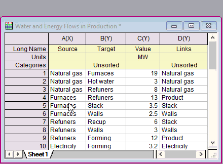

Show-Category-Indices
最終更新日：2020/2/16
ワークシートの列をカテゴリーとして設定、つまり、列を右クリックしてカテゴリーとして設定を選択すると、列の値が一連の番号にマップされます。このカテゴリー列を含めたすべての後処理とグラフ作成では、Originはカテゴリー値を内部的に番号として扱います。対応する番号を表示するには、ワークシートの左上隅をクリックして表示されるミニツールバーのカテゴリインデックスを表示ボタンをクリックします。

キーワード:カテゴリー番号を表示, カテゴリインデックス, カテゴリ値